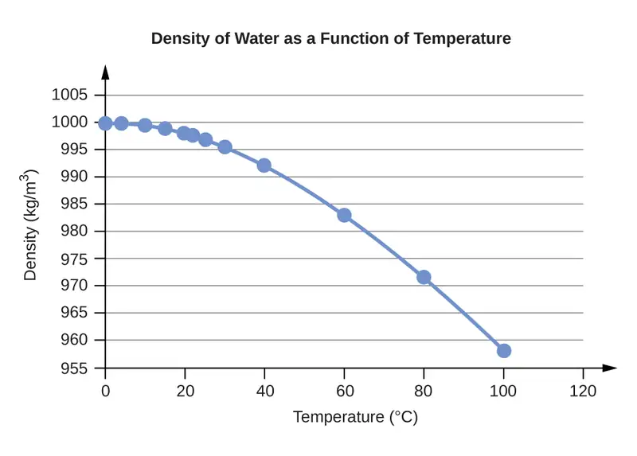
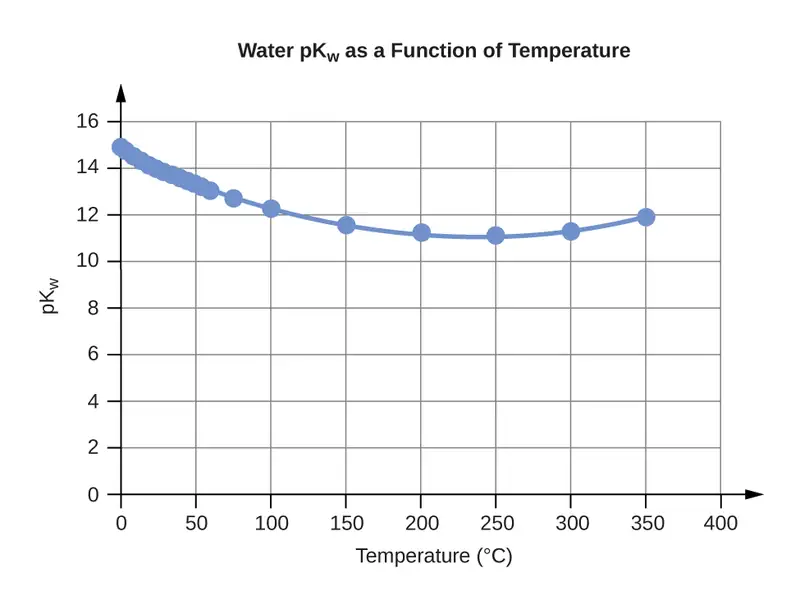

Appendix E: Water Properties¶
Water Properties¶
Table E.1
| Water Density (g/mL) at Different Temperatures (°C) | |
|---|---|
| Temperature | Density (g/mL) |
| 0 | 0.9998395 |
| 4 | 0.9999720 (density maximum) |
| 10 | 0.9997026 |
| 15 | 0.9991026 |
| 20 | 0.9982071 |
| 22 | 0.9977735 |
| 25 | 0.9970479 |
| 30 | 0.9956502 |
| 40 | 0.9922 |
| 60 | 0.9832 |
| 80 | 0.9718 |
| 100 | 0.9584 |

Table E.2
| Water Vapor Pressure at Different Temperatures (°C) | ||
|---|---|---|
| Temperature | Vapor Pressure (torr) | Vapor Pressure (Pa) |
| 0 | 4.6 | 613.2812 |
| 4 | 6.1 | 813.2642 |
| 10 | 9.2 | 1226.562 |
| 15 | 12.8 | 1706.522 |
| 20 | 17.5 | 2333.135 |
| 22 | 19.8 | 2639.776 |
| 25 | 23.8 | 3173.064 |
| 30 | 31.8 | 4239.64 |
| 35 | 42.2 | 5626.188 |
| 40 | 55.3 | 7372.707 |
| 45 | 71.9 | 9585.852 |
| 50 | 92.5 | 12332.29 |
| 55 | 118.0 | 15732 |
| 60 | 149.4 | 19918.31 |
| 65 | 187.5 | 24997.88 |
| 70 | 233.7 | 31157.35 |
| 75 | 289.1 | 38543.39 |
| 80 | 355.1 | 47342.64 |
| 85 | 433.6 | 57808.42 |
| 90 | 525.8 | 70100.71 |
| 95 | 633.9 | 84512.82 |
| 100 | 760.0 | 101324.7 |
![A line graph is titled “Vapor Pressure as a Function of Temperature.” The x-axis is titled “Temperature, degrees Celsius,” and the y-axis is titled “Vapor pressure, torr.” A line connects plot points at the coordinates 0 and 4.6, 4 and 6.1, 10 and 9.2, 15 and 12.8, 20 and 17.5, 22 and 19.8, 25 and 23.8, 30 and 31.8, 35 and 42.2, 40 and 55.3, 45 and 71.9, 50 and 92.5, 55 and 118.0, 60 and 149.4, 65 and 187.5, 70 and 233.7, 75 and 289.1, 80 and 355.1, 85 and 433.6, 90 and 525.8, 95 and 633.9, and 100 and 760.0.](img/cnx-chem-00-ee-vapor-img.webp)
Table E.3
| Water Kw and pKw at Different Temperatures (°C) | ||
|---|---|---|
| Temperature | Kw 10–14 | pKw1 |
| 0 | 0.112 | 14.95 |
| 5 | 0.182 | 14.74 |
| 10 | 0.288 | 14.54 |
| 15 | 0.465 | 14.33 |
| 20 | 0.671 | 14.17 |
| 25 | 0.991 | 14.00 |
| 30 | 1.432 | 13.84 |
| 35 | 2.042 | 13.69 |
| 40 | 2.851 | 13.55 |
| 45 | 3.917 | 13.41 |
| 50 | 5.297 | 13.28 |
| 55 | 7.080 | 13.15 |
| 60 | 9.311 | 13.03 |
| 75 | 19.95 | 12.70 |
| 100 | 56.23 | 12.25 |

Table E.4
| Specific Heat Capacity for Water |
|---|
| C°(H2O(l)) = 4.184 J∙g-1∙°C-1 |
| C°(H2O(s)) = 2.093 J∙g−1∙°C−1 |
| C°(H2O(g)) = 1.864 J∙g−1∙°C−1 |
Table E.5
| Standard Water Melting and Boiling Temperatures and Enthalpies of the Transitions | ||
|---|---|---|
| Temperature (K) | ΔH (kJ/mol) | |
| melting | 273.15 | 6.088 |
| boiling | 373.15 | 40.656 (44.016 at 298 K) |
Table E.6
| Water Cryoscopic (Freezing Point Depression) and Ebullioscopic (Boiling Point Elevation) Constants |
|---|
| Kf = 1.86°C∙kg∙mol−1 (cryoscopic constant) |
| Kb = 0.51°C∙kg∙mol−1 (ebullioscopic constant) |
![A line graph is titled “Water Full-Range Spectral Absorption Curve.” The x-axis is titled “Wavelength” and the y-axis is titled “Absorption ( 1 per meter ).” Evenly spaced tick marks on the x-axis denote 10 nanometers, 100 nanometers, 1 micrometer, 10 micrometers, 100 micrometers, 1 millimeter, and 10 millimeters. Evenly spaced tick marks on the y-axis denote 10 superscript negative two, 10 superscript negative one, 10 superscript zero, 10 superscript one, 10 superscript two, 10 superscript three, 10 superscript four, 10 superscript five, 10 superscript six, 10 superscript seven, and 10 superscript eight. Above the graph, horizontal lines indicate the range of wavelengths for U V, V I S, near I R , mid I R , far I R , and E H F. The graph contains one line that begins at 10 nanometers and a little more than 10 superscript six. Moving from left to right, this line ascends gradually until it reaches a point near 100 nanometers and 10 superscript eight. From this point, the line steeply descends to a point a little more than halfway between 100 nanometers and 1 micrometer, and slightly more than 10 superscript two. This point indicates the end of the range labeled “U V” and the beginning of the range labeled “V I S.” The range labeled “V I S” is shaded with a color spectrum including the full range of Roy G Biv colors. Here, the line briefly descends in the same path as before, and then steeply ascends to a point near 1 micrometer and 10 superscript zero. This point indicates the end of the range labeled “V I S” and the beginning of the range labeled “near I R.” The line continues its steep ascent, with short, abrupt descents in between, until it reaches a point a little more than halfway between 1 micrometer and 10 micrometers, and a little more than 10 superscript six. This point indicates the end of the range labeled “near I R” and the beginning of the range labeled “mid I R.” Here, the line moves steeply and sporadically up and down until it reaches a point a little more than halfway between 10 micrometers and 100 micrometers, and slightly more than 10 superscript five. This point indicates the end of the range labeled “Mid I R” and the beginning of the range labeled “Far I R.” The line descends very gradually to a point slightly more than 1 millimeter and slightly more than 10 superscript four. This point indicates the end of the range labeled “Far I R” and the beginning of the range labeled “E H F.” The line continues its gradual descent to 10 millimeters and slightly more than 10 superscript three. This point indicates the end of the range labeled “E H F.”](img/cnx-chem-00-ee-liqwatabso.webp)
Adapted from Chemistry 2e by OpenStax, licensed under CC BY 4.0. Access the original for free at openstax.org. Changes: converted to the web reading format of The Open Book Project.
-
pKw = –log10(Kw) ↩